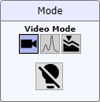
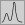

|
显微镜模式
|


视频 / 拉曼模式拉曼或视频模式在 WITec Control 中开始或停止测量时自动选择。但用户可以随时在这些模式之间切换。
根据此状态，自动显微镜系统将调整其光路，TruePower 激光的快门将关闭或打开。
TrueSurface
仅适用于具有 TrueSurface Mk2 的系统。
TrueSurface 模式在启动 TrueSurface 或 轮廓仪 测量时自动选择。对于自动显微镜系统，它为 TrueSurface 设置光路。
启用所有光源
仅适用于 SEM / RISE 用户：启用所有光源。
启动时，所有光源都被禁用，直到用户按下此按钮。